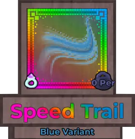
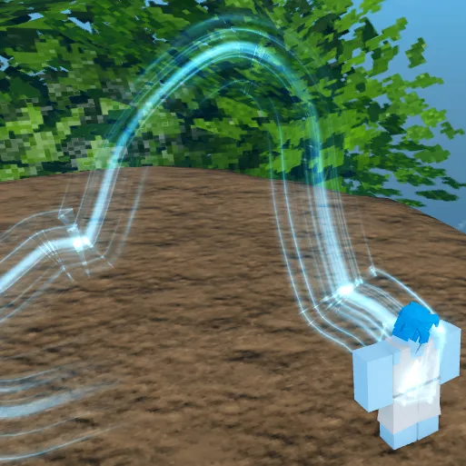
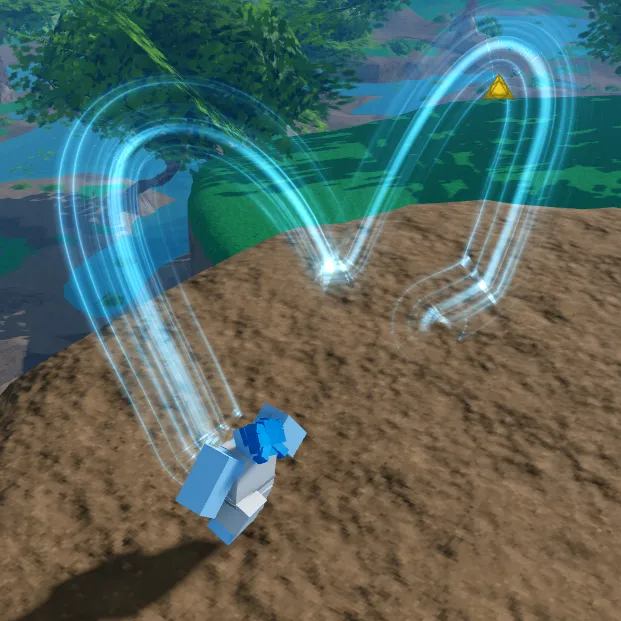

Speed Trail

Info
Slot: Accessory
Recolorable?: Yes
Unique Colors: None
Particle Effects: Yes
Sound Effects: None
Owner: None
Appearance & Effects
In-game description: None
The Speed Trail appears is an effect trail that the player leaves behind while moving. It consists of a bunch of separate trails, with a thicker main stripe surrounded by smaller stripes. The default color is blue, and the Speed Trail can be recolored.
Inspiration
The Speed Trail was inspried by A-Train from the television series The Boys. A-Train has super speed powers, hence the name of the relic. When A-Train runs during slow-motion shots, he leaves behind a similar looking electric-blue trail.

The Speed Trail

A player jumping around with the Speed Trail equipped
Image Gallery

CAPTION
CAPTION
CAPTION
CAPTION
CAPTION
CAPTION